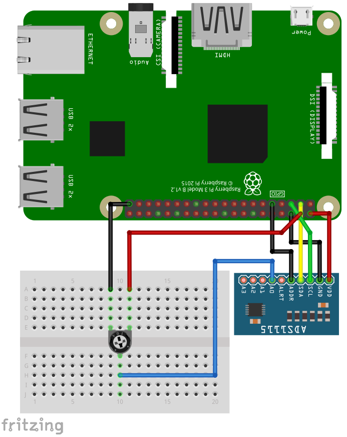

The ADS1015 and ADS1115 are analog voltage sensors using the I2C-protocol for communication.
To use the ADS1x15, import the library ads1x15
import ads1x15Open()
Open(interface)
Open(interface, address)
Open(interface, address, version)Open the ADS1X15 on interface interface with I2C address
address and device type version.
interface
"/dev/i2c-1"address
0x48version
version = 1version = 01Example:
Open("/dev/i2c-1", 0x48, 1)Channel(n)Set channel for measurement.
n
Integer: 0 … 7
| n | Type | Pin |
|---|---|---|
| 0 | differential | A0 - A1 |
| 1 | differential | A0 - A3 |
| 2 | differential | A1 - A3 |
| 3 | differential | A2 - A3 |
| 4 | single-ended | A0 |
| 5 | single-ended | A1 |
| 6 | single-ended | A2 |
| 7 | single-ended | A3 |
VoltageRange()
VoltageRange(V)Set the voltage range in Volts. Any value less than the minimum value will set the minimum voltage range. Any value greater than the maximum value will set the maximum voltage range. The first voltage range greater than or equal the the specified value will be set.
V
Example:
VoltageRange(1024) ' Set voltage range to 1.024V
VoltageRange(1025) ' Set voltage range to 2.048VSampleRate()
SampleRate(S)Set the sample rate in samples/second. Any value less than the minimum value will set the minimum sample range. Any value greater than the maximum value will set the maximum sample range. The first sample range greater than or equal the the specified value will be set.
S
Example:
SampleRate(128)V = Read()Measure the voltage.
V
ContiniousMode()Set ADS1X15 to continious measurement mode. ADS1x15 will measure with the specified sample rate. The read-command will return the value of the last measurement.
SingleShotMode()Set ADS1x15 to single shot mode. Each read-command will initiate a measurement.
Close()Close the ADS1X15 device.
For running this example, you need an ADS1015 or ADS1115 sensor. SmallBASIC PiGPIO 2 is using the I2C-protocol for communication. The Raspberry Pi supports this protocol in hardware, but by default the protocol is disabled. Therefore you have to setup I2C as described here.
In the next step please wire the sensor as shown in the following image. The example is using an ADS1115 but the ADS1015 will work, too. Use a 10K potentiometer.

The I2C bus is using pin 2 (SDA1) and 3 (SCL1). The sensor can be driven with a voltage from 2.2 to 5.5V. The input pins can be connected to -0.3V to VDD + 0.3V. If you drive the sensor with 5V from the Pi, the maximum allowed voltage at the input pins is 5.3V. If you drive the sensor with 3.3V, the maximum allowed voltage at the input pins is 3.6V.
import ads1x15 as adc
const A0 = 4 ' Input A0
const A1 = 5 ' Input A1
const A2 = 6 ' Input A2
const A3 = 7 ' Input A3
const A01 = 0 ' Differential Input A0 - A1
const A03 = 1 ' Differential Input A0 - A3
const A13 = 2 ' Differential Input A1 - A3
const A23 = 3 ' Differential Input A2 - A3
adc.Open("/dev/i2c-1", 0x48) ' Open device
adc.Channel(A0) ' Set input channel A0
adc.VoltageRange(6.144) ' Set Voltage range from 0 to 6.144V
adc.SampleRate(128) ' 128 Samples per second
for ii = 1 to 10
delay(500)
print adc.Read() ' Returns voltage as float
next
adc.Close() ' Close connection